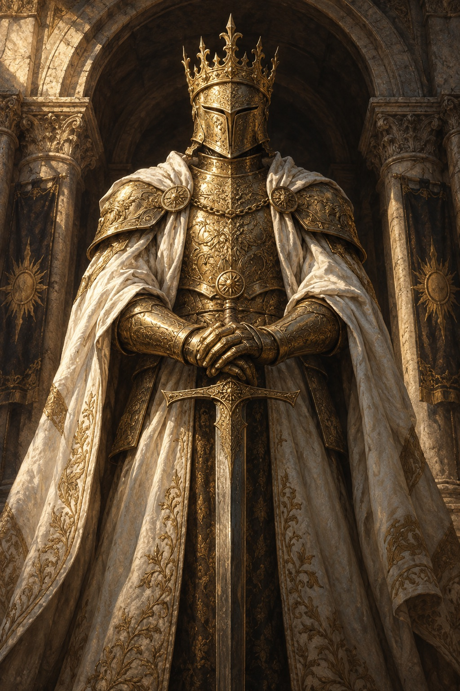

A peer in a greater world
Mordecai
A foundation
for worlds.
Independent worlds. A shared foundation.
A peer-to-peer network for applications
with a life of their own.
Many worlds. One foundation.
01 / From this node
Checking node
- Network
- —
- Block height
- —
- Latest block hash
- —
Waiting for chain data. Updates every 10 seconds.
View chain data